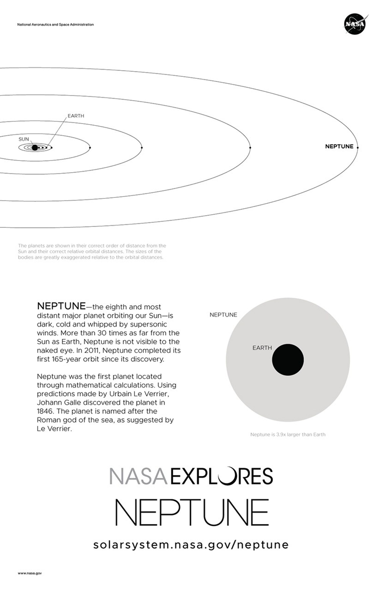

Discover More Topics From Novaspace
Learn more about Black holes, moon, saturn rings, Titan, About me, Mercury, and Mars.
Learn MoreAugust 6, 2018
Credit NASA
Language english
Version A of the Neptune installment of our solar system poster series.
The posters are best printed on 11x17 paper. Several download options are available in the column on the right.
About the image: This picture of Neptune came from NASA's Voyager 2 spacecraft in 1989. Credit: NASA/JPL
Dark, cold and whipped by supersonic winds, giant Neptune is the eighth and most distant major planet orbiting our Sun.
More than 30 times as far from the Sun as Earth, Neptune is not visible to the naked eye. In 2011, Neptune completed its first 165-year orbit since its discovery.
Optional back with a brief summary and orbit diagram.
Neptune is so far from the Sun that high noon on the big blue planet would seem like twilight to us. The warm light we see here on our home planet is roughly 900 times as bright as sunlight on Neptune. The planet’s rich blue color comes from methane in its atmosphere, which absorbs red wavelengths of light but allows blue ones to be reflected back into space.
Neptune was the first planet located through mathematical calculations. Using predictions made by Urbain Le Verrier, Johann Galle discovered the planet in 1846. The planet is named after the Roman god of the sea, as suggested by Le Verrier.
Explore Neptune in depth at https://solarsystem.nasa.gov/neptune
Learn more about Black holes, moon, saturn rings, Titan, About me, Mercury, and Mars.
Learn More